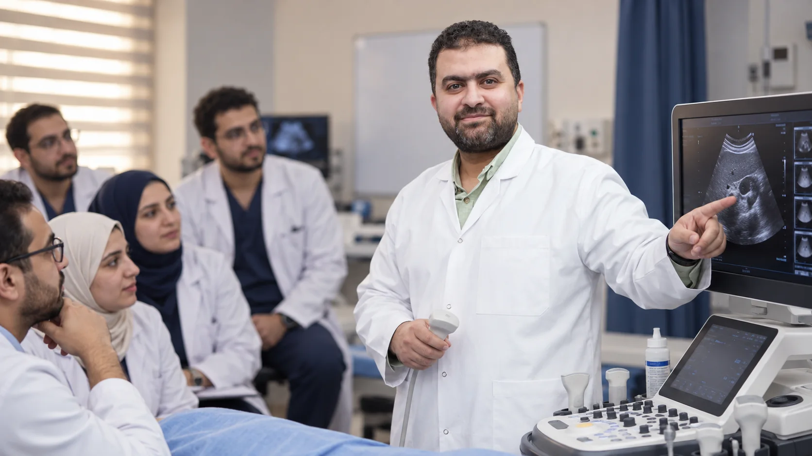
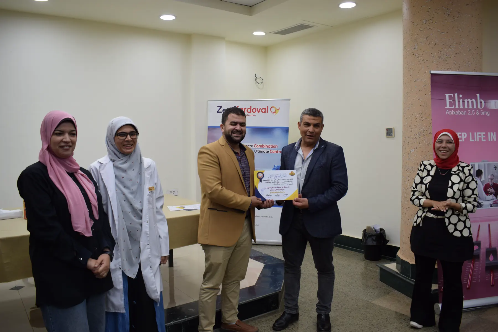

استشاري أشعة
تقييم تشخيصي وتداخلي، وتخصص واسع في السونار مع اهتمام خاص بالأطفال والحضانات.

الملف المهني
استشاري الأشعة التشخيصية والتداخلية، حاصل على ماجستير الأشعة والزمالة المصرية والبورد العربي، ويدرس الدكتوراه حاليًا.
عن د. محمد
د. محمد مصطفى سليمان استشاري أشعة تشخيصية وتداخلية، وخريج كلية الطب بجامعة المنوفية — دفعة 2010. تخصص في فروع السونار المختلفة والسونار رباعي الأبعاد، مع خبرة كبيرة في فحوص الأطفال وحديثي الولادة والحضانات.
يربط في التقييم بين طلب الطبيب المعالج، التاريخ المرضي، ونتيجة التصوير؛ لتقديم قراءة واضحة في سياق الحالة.
مجالات الخبرة: السونار، السونار رباعي الأبعاد، سونار الأطفال وحديثي الولادة والحضانات.
وبجانب العمل الإكلينيكي، يعمل محاضرًا معتمدًا بنقابة الأطباء ومدربًا معتمدًا بالجمعية المصرية للأشعة.
تقييم تشخيصي وتداخلي، وتخصص واسع في السونار مع اهتمام خاص بالأطفال والحضانات.
محاضرات وورش عملية في الأشعة والسونار، تشمل مناقشة الحالات والتطبيق المباشر على الجهاز.
مؤسس RadioMind للتدريب الطبي، ومؤسس ومدير مركز Smart Scan والأشعة المتنقلة.

بين العيادة ومنصة التدريبالتأهيل المهني
ماجستير الأشعة، الزمالة المصرية، البورد العربي، ودراسة الدكتوراه حاليًا في تخصص الأشعة التشخيصية.
تأهيل أكاديمي متخصص في علوم الأشعة والتصوير الطبي.
تدريب مهني تخصصي يجمع الدراسة بالممارسة السريرية.
مسار مهني عربي في تخصص الأشعة والتصوير التشخيصي.
استمرار في البحث والتعلم وتطوير الخبرة العلمية.
مشاركة المعرفة الطبية في إطار مهني معتمد.
تدريب الأطباء على الفهم والتطبيق في الأشعة والسونار.

الممارسة والتدريب
من خلال Smart Scan، تمتد الممارسة إلى خدمات الأشعة والأشعة المتنقلة. ومن خلال RadioMind، تتحول الخبرة إلى ورش ومحاضرات وبرامج تدريبية للأطباء.